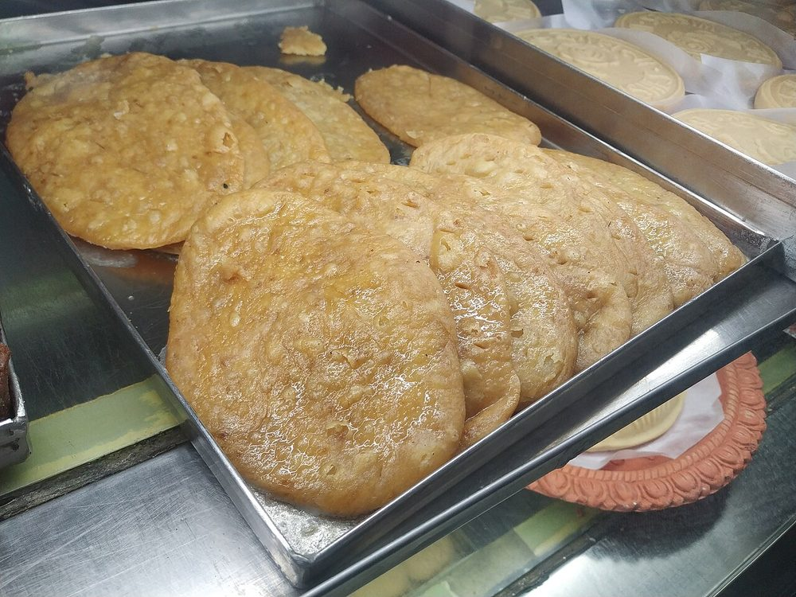

Bihari Malpua
fennel-scented flour pancakes fried in ghee with lace-crisp edges, steeped in light sugar syrup

Contains: milk, gluten
Ingredients
Quantities for 4.
- 200g Maida
- 400ml, full-fat Milk
- 100g, grated Khoyagives a richer, softer malpuaoptional
- 300g for the syrup, plus 2 tbsp for the batter Sugar
- 150ml, for the syrup Water
- 1.5 tsp, lightly crushed Fennel Seedsthe defining flavour. Do not leave it out
- 4 pods, seeds ground Cardamom
- 400ml, for shallow frying Ghee
- a pinch, soaked in 1 tbsp warm milk Saffronoptional
Cookware
kadhai, stovetop
Checked against the ingredient list for ten allergens: milk, egg, fish, crustaceans, tree nuts, peanuts, sesame, mustard, soy and gluten. Brands vary, so read the label on anything new to you.
Before you start
- Rest the batter at least 30 minutes, and up to 2 hours. Unrested batter spreads thin and the malpua turn leathery.
- Make the syrup first and keep it warm on the lowest flame. Malpua must go from the frying pan into warm syrup, not cold.
- Bring the milk to room temperature before mixing, so the batter comes together without lumps.
Method
- Boil the 300g sugar with 150ml water for 5-6 minutes to a thin one-string syrup, stir in the saffron milk, and keep it warm over the lowest heat.Stop well short of thick. A heavy syrup coats the malpua in a hard crust instead of soaking in.
- Whisk the maida with the grated khoya, 2 tbsp sugar, crushed fennel and ground cardamom.
- Add the milk in three additions, whisking to a smooth, lump-free batter the consistency of thick pouring cream.
- Cover and rest the batter 30 minutes, then check it. It should ribbon off the spoon and settle back in about 3 seconds.If it is too thick the malpua will be doughy in the middle; loosen with a tablespoon of milk at a time.
- Heat 2cm of ghee in a small kadhai over medium heat until a drop of batter rises at once with a fizz.
- Pour in a ladleful of batter from a height of about 10cm so it spreads into a 10cm round with frilled edges. Fry two at a time at most.Pouring from a height is what makes the lace edge; dropping the batter close gives a flat thick pancake.
- Fry for 2 minutes without touching it, until the edges turn golden and lift on their own.
- Turn once with a slotted spoon and fry the second side 90 seconds, spooning hot ghee over the centre.
- Lift out, drain for a few seconds, then slide straight into the warm syrup and soak 4-5 minutes a side.Hot malpua into warm syrup. Either one cold and it will not absorb.
- Lift out of the syrup and serve warm, with rabri or on their own.
Storage
Best the day they are made. They keep 2 days refrigerated in a little of the syrup; warm them 20 seconds in a pan over low heat before serving, as cold malpua are dense.
Nutrition Low estimate
Medium protein: 15 g a serving, 8% of the calories
| Per serving269 g | Per 100 g | |
|---|---|---|
| Calories | 785 kcal | 293 kcal |
| Protein | 15.3 g | 6 g |
| Carbohydrate | 128.7 g | 48 g |
| of which sugars | 89.8 g | 33 g |
| Fibre | 2.1 g | 1 g |
| Fat | 24.4 g | 9 g |
| of which saturated | 14.6 g | 5 g |
| of which unsaturated | 8.1 g | 3 g |
Syrup left in the bowl, or batter that yields more than the stated servings, means the real figures are likely lower. Estimated from raw ingredients using USDA FoodData Central.
More like this: Vegetarian Indian recipes · No onion no garlic recipes · Bihari recipes
Times, yields, allergens and nutrition are guidance. Use your own judgement on doneness and on storing. More in About.